contents | previous | next ANOTHER week passed, and no letters!—Rosalie, who became ever hour more uneasy, now wished to consult Walsingham whether she ought not to write again, and was even forming schemes to find Charles Vyvian, who might, perhaps, be in England, in which case her friend could greatly have assisted her, but Walsingham appeared not. In the mean time, in her walks, Rosalie continually met the lady who had made an acquaintance with her little boy, and, who often courtesying to her as they passed, engaged her almost unavoidably to return the civility. Her abode, indeed, was no longer so retired as it had been. In proportion as the summer advanced, several families, who shunned the more
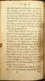 View image of 124gay and populous bathing places, arrived; and though none of them, except the lady in question, appeared at all disposed to make any acquaintance, Rosalie, who fancied herself the object of curiosity, was compelled to seek walks, more distant from the village, among the fields that arose behind it, or on a part of the sands farther from the general resort. Every hour of her life was now embittered by increasing anxiety; for another, another, and another day passed without the answer she expected from Mrs. Lessington. At length she received, to her utter dismay and confusion, the letters she herself had written. That to Mrs. Lessington had been opened at the post-office and was now sealed with the office seal, while on the cover was written——"No such person at Hampstead;" and again "Left Hampstead, no direction to be got whither gone."——The enclosure to Mrs. Vyvian was unopened. The consternation and distress of Rosalie were now extreme, nor did she know
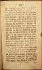 View image of 125what steps to take. After so many days of anxious suspense, she was farther than ever removed from the hopes of procuring that protection which she felt to be every day more necessary; farther than ever removed from the access to the only channel by which she might hope for intelligence of Montalbert, she now repented that she had felt so much reluctance to see or write to Mr. and Mrs. Blagham in her way from Portsmouth, and that she had not written, on her first arrival, to her other (some time) sister, Mrs. Grierson, either of whom could have informed her of Mrs. Lessington's having left Hampstead; a circumstance which had never occurred to her as possible, because not very probable. To repair as immediately as she could an error, which she now suspected had arisen from false pride and false shame, she thought, although late, of making these applications; but having been so much accustomed to rely on the opinion of Walsingham, she hesitated whether she
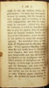 View image of 126 ought to take any measure without his participation. So many days had elapsed without his coming, that she thought he was, perhaps, gone to London, or had other engagements, and that his return might be uncertain. Indeed were he to be consulted, it would be impossible for him to give his opinion, since he neither knew the singular situation Rosalie was in as to her real mother, or the characters of the persons to whom she thought of applying. She recollected them, at least those of Blagham and his associates, with pain. If they appeared disgusting to her, when she had hardly been in societies of more elegance, they were likely to appear insupportable now that she had been accustomed to the intelligence and polished manners of Montalbert and Walsingham, to whom might be added Alozzi and De Montagny, who were men of fashion in their respective countries. But this contrast was not all that was likely to make Blagham appear disgusting to her; she dreaded his coarse raillery on
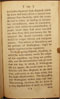 View image of 127her sudden departure from England, which she knew had been told in a manner very different from the truth, while the events she had to relate, as leading to her present circumstances, were so uncommon, and so little within the comprehension of people whose ideas had never travelled ten miles from their own homes, that she imagined she should inevitably expose herself to vulgar ridicule and malignant censure. The absence of Montalbert, and the presence of Walsingham, might be equally injurious to her reputation. To the lingering suspense, therefore, in which she must remain, unless she adopted this expedient, any thing was preferable, and she determined to wait no more than one day, in which, if Walsingham did not appear, she would write to Mrs. Grierson and Mrs. Blagham, at the same time, and nearly in the same terms, that she might offend neither. The day passed, and Walsingham neither came nor sent. That evening, therefore, she sat down in a very dejected state of mind to compose
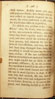 View image of 128these letters. Rosalie wrote with great ease and correctness; but, thought what she now wished to express required but few words, she never undertook a task which she found more difficult to perform. To address two persons as her "dear sisters," who, she knew, were not related to her, was extremely irksome; that title, when they lived together under the same roof, and were called the children of the same parents, had obtained for her but little of their affection, and now, that she had been long estranged from them, she was afraid it would not procure her common civility. If she was considered by them as returning in an equivocal situation, they might repulse her as likely to need pecuniary assistance; if, on the contrary, she represented herself as the wife of Montalbert, a man whose fortune and rank in life was so much superior to those of the men they had married, she was sure of exciting their envy and indignation.——It was better, however, to be envied than pitied, and, knowing herself to be Mon-
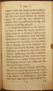 View image of 129talbert's wife, she could not determine to appear in any other light, repenting that she had ever called herself by another name, for which she now thought her reasons were not sufficiently strong, and had been too hastily adopted. At length she finished her two letters; in each of which she briefly stated her being returned to England without her husband, a circumstance which had arisen from events too tedious to relate; and she concluded with requesting to know where Mrs. Lessington was to be heard of, and whether her brother William, (the eldest Lessington, to whom she gave that name without reluctance), was still at Oxford. The uncertainty of this, as he was in expectation of a college living when she left England, was the only reason why she did not first apply to him. Amid the extreme disquiet, which Rosalie was in about her mother, she could not but feel wonder and uneasiness at the long absence of Walsingham, who had now been more than a week without see-
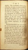 View image of 130ing her. The recollection of the melancholy state of mind, in which he last parted from her, added to her concern; for she fancied he might be ill, and she was too sure he was unhappy. Yet she saw the impropriety of communicating these fears to him, or even of expressing impatience at his not coming, when he might, perhaps, have other engagements; she knew, therefore, that she ought to wait, without impatience, his promised visit. The little Montalbert was now between six and seven months old, and, from his strength and size, appeared to be more. Claudine was extremely fond and very careful of him, and was often entrusted with the care of him during a short walk, while Rosalie, who dreaded the observations that she had found were made upon her, confined herself more to the house. Claudine, who was a lively Provinçale, was by no means so averse to society; and, though her mistress always directed her to go with the child into the most
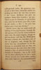 View image of 131unfrequented walks, she generally contrived to find some admirable reason for choosing that where she was sure to meet "Des beaux Messieurs tres poli, ou quelques dames bein honnête; qui parloient un peu le Francois, et qui avoient tant, mais tant de bontis, pour elle, et tant de joli choses, a dire a son petit bon homme que c'etoit une charme." Rosalie knew that her maid could tell nothing of her real situation, because she was ignorant of it, but she feared infinitely more what she might imagine, though the girl was always told that Mr. Walsingham was only a friend, who had taken care of her to England; and, though she had never seen any circumstance in his behaviour to contradict such an idea, yet Rosalie fancied she had, more than once, marked a sort of arch incredulity in the features of Claudine: but as she could not set about assuring her he was a mere friend, because that would rather confirm that avert suspicion, she contented herself
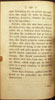 View image of 132with forbidding her to answer any questions that might be made by strangers, doubting, however, whether she would obey the injunction. Rosalie, who saw new faces arrive at the place every day, occasionally formed wishes for a residence more secluded.—Yet when she considered that as soon as she could obtain intelligence of her mother, she should probably remove nearer to her; and when she adverted to the convenience of being in the house with very civil and quiet people, she thought herself hardly authorised to propose a change. She should undoubtedly have an answer very soon from one, or both her sisters, which might put an end at least in a great measure, to her present uncertainty. Three days, however, passed before she found at the post-office the following letter——
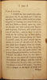 View image of 133 "THEY say that wondering makes one grow old, so my Kate and I will not wonder, but must confess ourselves a little surprised at hearing you were so near us, and had stolen a march upon us, when we thought you were among your Signors and Signoras, Italianos, and people quite out of our line; and my Kate is not so ready in the writing way as some ladies, (which I don't reckon among her faults I promise you), so you'll excuse my replying to your of 2d inst.—To be sure you must have dropped from the clouds, and have been quite in terra incognita, not to know that our good mother has quitted Hampstead these five or six months. I settled her affairs there for her when I went up on the matter of Poulcat versus Perriwinkle last Hilary; and she went to live with her son Francis, who, you know, was always a sort of favourite; but there was a rumpus at the house of Crab and
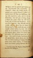 View image of 134 Widgett, and he quitted and settled with his new-married wife at Carlisle. Sir Francis*, when the King pleases, has picked up a pretty fortune I assure you, and is better off than our Episcopus, who has also married a wife, and so lost his fellowship; but he's got a living, though a small one, and I dare say will have a house full of sons and daughters. As to our olive branches, they flourish and increase, and my Kate has no chance of seeing much of the world this year, as we expect a third before its end; but as I must be at Grinstead, in a few days, for the summer assize, where I've three capital causes, I'll just peep upon you in my way. As to the Vyvians, you know, they are grand folks, much above our cut, so that we know nothing of them more than what every body knows. I heard that there was treaties going forward for the
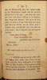 View image of 135 sale of Holmwood, but the entail made by old Montalbert could not be dock'd till the heir is of age; and they say he's not over and above willing to accommodate Papa and Mama: but more of this when we meet.—I am somewhat at a non plus how to direct, as my Kitty and I wonder why you should have an alias to your name; but I suppose you have good reasons. The other letter ran thus:—— "MADAM, "YOUR's we received.—My wife not being very well, this serves to inform you that Mrs. Lessington is at Carlisle, at Mr. Frank's, who is gone to live there, and she with him. I do not know that any other direction is required. My
wife heard from her about six weeks ago; she was then in good health: wishing the same to you, with my wife's love and service, Though Rosalie had no reason to expect any other kind of letters than these from her two brothers-in-law, or rather those whom she had supposed such, her heart, naturally tender and affectionate, sunk in chill despondence when she reflected on the little regard there seemed to exist for her, among persons who had been accustomed to consider her as of their own blood; and who, she believed, had never been undeceived.—"Surely, (said she), had one of them been cast alone and unprotected into my neighbourhood, I should not have hesitated a moment in
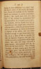 View image of 137 flying to their assistance."——Alas! had she known more of the world, she would have found this conduct of her supposed family too common to excite a moment's wonder; she would have seen that the man of law desired to reconnoitre her situation before he ventured even to profess kindness, lest he should find her in circumstances that might make such kindness expensive; while the gentleman farmer had no inclination to invite to his house a relation of his wife's, who was either humbled enough to give them some trouble, or in a style of life to mortify his wife by superior elegance, and give her occasion to make comparisons which might render her, who had been reckoned a great beauty, discontented with the inferior lot she had chosen. The coldness, however, of these letters, gave her only momentary pain; but she reflected with longer and more acute uneasiness, that the intelligence she had gained was not only unsatisfactory, but such as baffled the
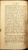 View image of 138hopes she had entertained of being under the protection of Mrs. Vyvian. She now was almost determined to write immediately to her mother, but the caution she had received, and the dread lest her youngest daughter might be at the house, made her hesitate. It was possible too that Mrs. Vyvian might be removed from Hampstead, and to either of Mr. Vyvian's houses it was impossible for her to direct. One sentence in Blagham's letter was at once puzzling and alarming. It seemed to intimate not only a design on the part of Vyvian to sell Holmwood, which she thought would give infinite pain to his wife, but in intimated a dissention between the mother and the son, which appeared to Rosalie quite incomprehensible. All, however, that could now be done, was to write to Mrs. Lessington; but she knew it must be at least ten days before she could have an answer. Almost worn out by the cruel suspense she
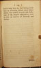 View image of 139 had so long been in, and feeling every hour an increasing distress about Montalbert, she looked forward with sensations of the deepest despondence, even to such an interval of solicitude and anxiety.
|
){kind=link}
){kind=link}
){kind=link}
){kind=link}
){kind=link}
){kind=link}
){kind=link}
){kind=link}
){kind=link}
){kind=link}
){kind=link}
){kind=link}
){kind=link}
){kind=link}
){kind=link}
){kind=link}